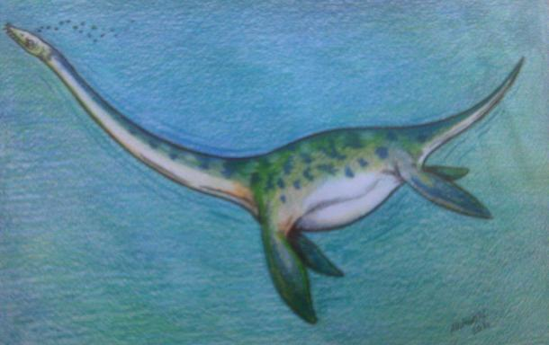

El monstruo del lago Ness, familiarmente llamado Nessie,es el nombre de una criatura legendaria que se dice que habita en el lago Ness, un profundo lago de agua dulce cerca de la ciudad de Inverness, en Escocia,la mayoría de las descripciones modernas sobre el aspecto del monstruo indican que existiría una criatura que se asemejaría a los extintos plesiosaurios, unas criaturas acuáticas prehistóricas.

Los rumores de un presunto gran animal o monstruo que mora en el lago han circulado durante siglos desde hace 1.500 años, aunque la precisión, credibilidad y veracidad de tales historias siempre se ha cuestionado.